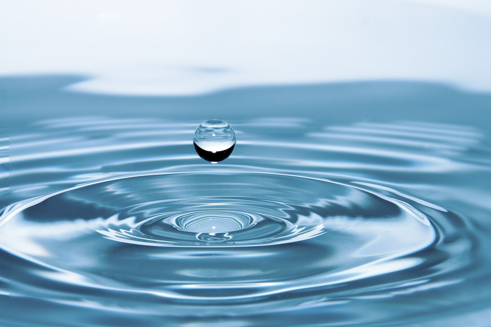

“The greatness of a nation and its moral progress can be judged by the way its animals are treated."- Mahatama Gandhi

“Human nature is like water. It takes the shape of its container.” ― Wallace Stevens"
“The greatness of a nation and its moral progress can be judged by the way its animals are treated."- Mahatama Gandhi
“Human nature is like water. It takes the shape of its container.” ― Wallace Stevens"

“"Trees are poems that the earth writes upon the sky.― Kahlil Gebran"

“The sky is the part of creation in which nature has done for the sake of pleasing man.” – John Ruskin"